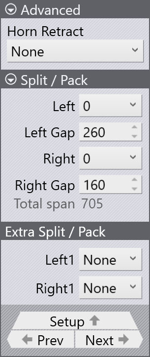

編輯壓料器
在自動加工過程中，TecZone Fold會產生壓料器組合，使盡可能多的彎曲可以透過初始組合 進行處理。壓料器組合也可以手動調整，以適應不同的零件幾何形狀和彎曲要求。
壓料器(BH)面板
按一下上部壓料器開啟 BH 面板。此面板允許您編輯壓料器屬性（針對選定的彎曲）， 包括更改壓料器組合、使用ENW工具、更改ENW工具類型等。
按一下 Blank-holder 下拉式選單以更改壓料器類型：


-
ENW tool - 此選項用於選擇特定彎曲的ENW工具類型。資訊將顯示在彎曲導航器 儲存格中。
-
Core composition - 初始壓料器組合，即沒有任何附加工具的標準壓料器。
-
Tool Change (FZ23) - 使用FZ23功能對新的壓料器組合進行編程。
Part-Z：使用此選項沿Z軸移動零件。這對於沿彎曲線調整零件在機器中的位置 非常有用。
Length：編輯壓料器長度。TecZone會自動產生與指定長度值匹配的壓料器組合。
Z-offset：此選項用於沿Z軸偏移 ENW tool。
Horns：選擇要包含在壓料器組合中的喇叭件。您可以選擇_左側_、右側_或_兩側 喇叭。
Offset：這是機器中心與壓料器中心之間的距離。

Split：芯組合右邊緣與壓料器右側第一個未使用件（灰顯）之間的間隙長度。
進階
Horn Retract：選擇_None_以停用喇叭縮回。可以透過選擇_左側、右側或兩側_喇叭 來啟用喇叭縮回。
Split / Pack和Extra Split / Pack
這些選項可用於拆分和打包壓料器組合中的件。Split用於在工具之間建立間隙，而 Pack用於關閉工具之間的間隙。
Split/Pack 和 Extra Split/Pack 選項用於調整工具之間的間隙。
要建立拆分，工具向外移動；要打包它們，工具向內移動。
| 壓料器的每一側僅支援一個或兩個拆分（例如，不可能在左側有三個拆分而在 右側有一個拆分）。最多可以有四個總拆分：每側兩個。 |
| 標準壓料器的寬度為160公釐，帶喇叭的壓料器寬度為199公釐。 |
Split / Pack
Left or Right: 選擇拆分/打包操作的側面（左側或右側）。
-
選擇 0 將在芯組合末端啟動Split / Pack。
-
選擇負值（例如-160）將在芯組合之間新增間隙。
-
選擇正值（例如+199）將在芯組合末端新增新件。
Left or Right gap：編輯壓料器所選左/右件的標準間隙量。
Extra Split / Pack
Left1 or Right1：選擇要在其後引入額外間隙的標準件。通常有八個標準件可用， 不包括喇叭壓料器。
Left Gap1 or Right Gap1:
編輯標準件之後的額外間隙量。
|
如果在此處啟用額外間隙，則無法再編輯Split / Pack中的標準間隙。 此選項不適用於壓料器類型 Tool Change (FZ23)。 |